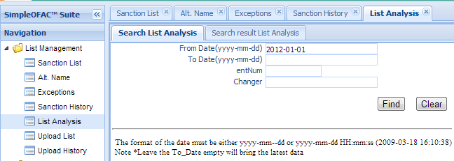
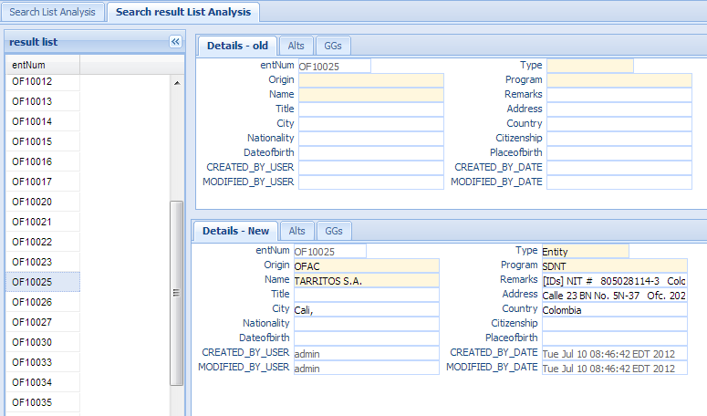

Sanction List Analysis¶
List analysis gives users the ability to view the changes on the sanction list between day one and day two.
Click the List Analysis in the left navigation menu under List management, a new List Analysis Tab folder will be created in the right panel.
There are 2 sub-Tab folders, Search Sanction List Analysis and Search Result Sanction List Analysis.
Search Sanction List Analysis¶
Search Criteria
| Field Name | Description |
|---|---|
| From Date | The start date; it must be in mm/dd/yyyy HH:MM:SS or mm/dd/yyyy format. This is required. |
| To Date | The end date; it must be in mm/dd/yyyy HH:MM:SS or mm/dd/yyyy format. Leave this field empty will bring the latest data, the same as current date. |
| EntNum | Link to sanction list entry unique record identifier. |
Functional buttons¶
- Find: – click Find button to search.
- Clear:– click Clear button to clear all the criteria.
Search Result Sanction List Analysis¶
The left side result list shows the list of the sanction list that has been changed (add/delete/update) during from-date to to-date. In the right top port, is the Details - Old, shows the select entry at From-Date point of time. The right bottom part, Details - New, shows the selected entry at To-Date point of time.
If at From-Date, the select entry does not exist yet, name, type, program, etc fields will be empty. If the select entry is deleted, The **DELETE* will be add in front of the name.